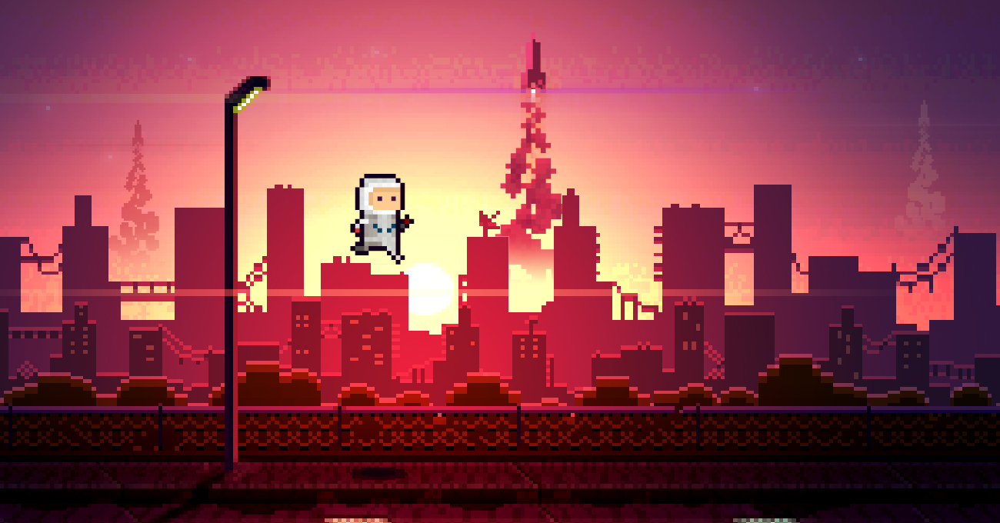

Darrin Henein & Stephan Leroux present


Lastronaut Passes 1 Million Downloads in First Week
March 17, 2015
Toronto, Canada — If you’d asked either of us ten days ago how many Lastronaut players we expected to see, I don’t know how we would have answered. As first-time game developers, we had hopeful guesses of around 1000 downloads, mainly from those that we’d already shared our project with. Lastronaut was a passion project to begin with; we were just hoping to just make a good game and have some people play it.
The iOS App Store sees hundreds, if not thousands, of new games every day. The sad truth is that a lot of indie games who enter the market without huge marketing budgets go unnoticed, and as we hadn’t spent a dime on the game yet, I think we were both realistic about our chances. To say we had misjudged the reception would be an understatement.
So how did we do?
We are extremely excited to share that within 7 days of its release, Lastronaut has seen over 1.1M
downloads!
Neither of us could have ever imagined such an overwhelming response for our little game. It has truly
been one of the most encouraging, rewarding, inspiring and exhilarating week of our careers.
To all of our players and supporters, THANK YOU. To everyone who shared the game on Twitter or Facebook, showed it to a friend or family member, or who wrote about the game — THANK YOU. All of you deserve credit for helping to make this dream of ours come true.
What does one million players look like?
Well, firstly, we’re seeing players from 216 countries around the world. Since launch, these players have spent a cumulative 42.7 years in the game. That’s longer than either Darrin or Steph have been alive! We’ve got a couple hundred players who alone have almost racked up 100k meters in the game. Almost 46.5% of deaths occur from the non-seeking missiles, and 23.5% from the fire hazard. The weapons are seeing an almost perfect 5-way split (despite claims that the flamethrower or laser beam are the key to success!), with the flamethrower taking a slight lead and can be credited for 23.3% of all kills. Over 15 billion shots have been fired, and together we’ve taken our little astronaut hero over 3,500,000,000m!
Where do we go from here?
We’ve seen a lot of recommendations, feature requests (and a few rare bugs) come in through Twitter and email and rest assured, we’re listening to each and every one. Development on Lastronaut 1.1 officially began last week, and the roadmap for our first major update is locked in. We hope to finish development within a month or so and in true Lastronaut spirit, will be a free update for everyone. Without giving too much away, we’re pretty excited about some of the new features. While the goal right now is just to beat your high score, that can be daunting. We’re giving players new incentives to make progress, and each run will get you closer to those goals and rewards. We’re adding a few new ways to dodge and demolish out on the street, and some ways to let you choose your own play style. And we’re hoping to let you make Lastronaut your own… but I think we’ve already said too much!
We’re so excited to bring you this update, and are already thinking about what comes after Lastronaut (hint: more games!) Stay tuned by following @lastronautgame, Darrin (@darrinhenein) and Steph (@stephanleroux) on Twitter.
And again, to everyone: thanks!
– Darrin + Steph

Darrin Henein
Artwork, Programming & Music